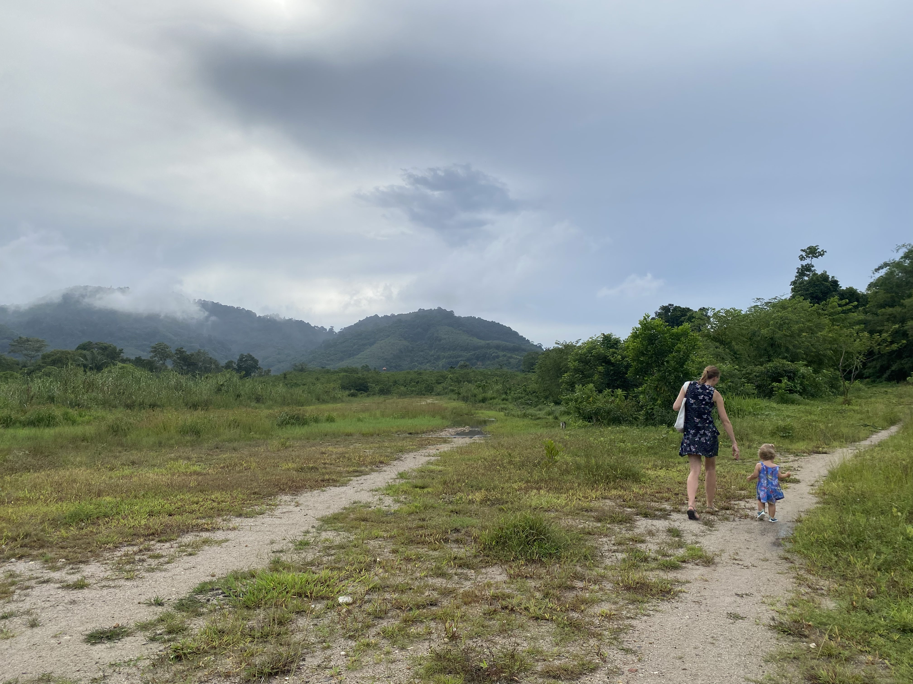
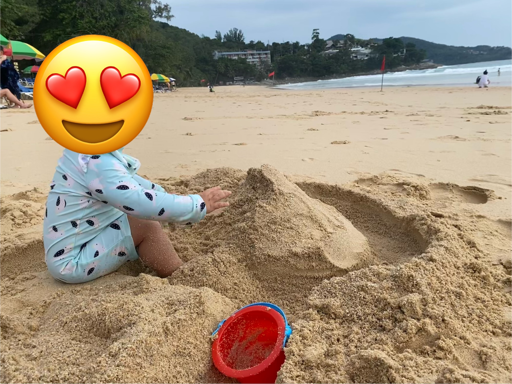
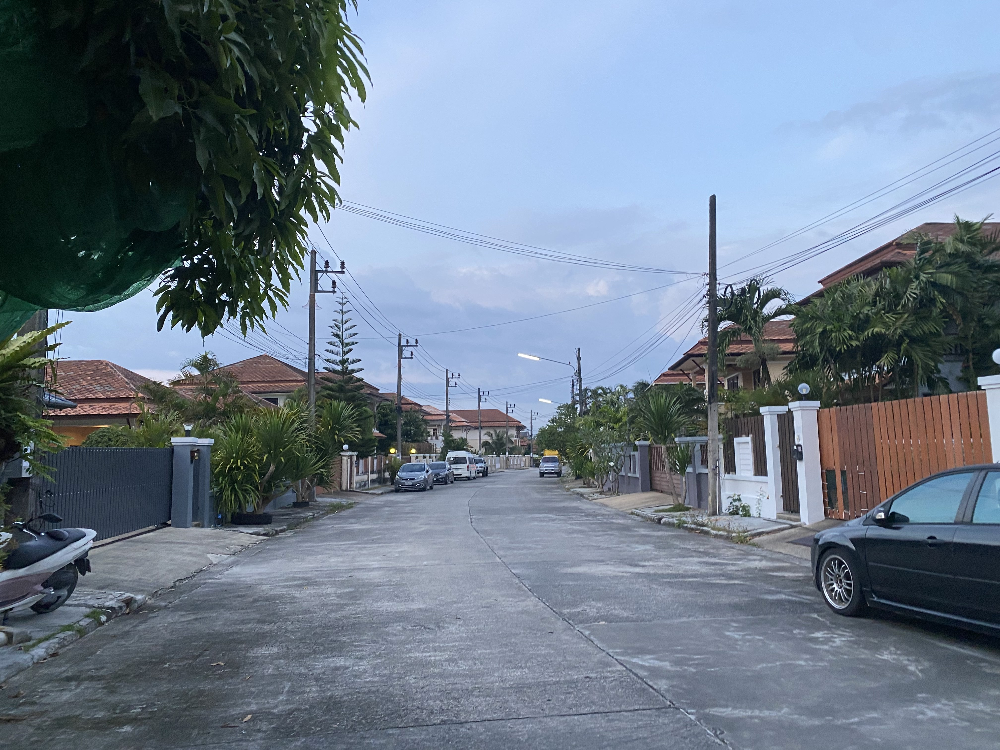
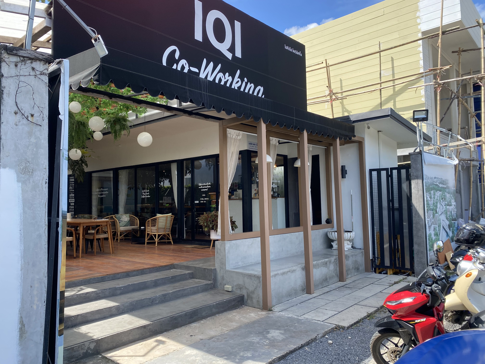
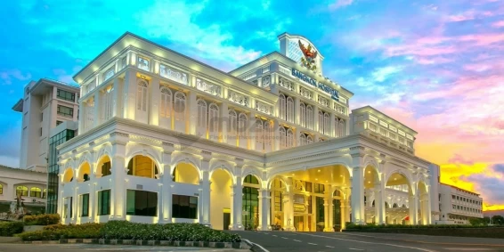
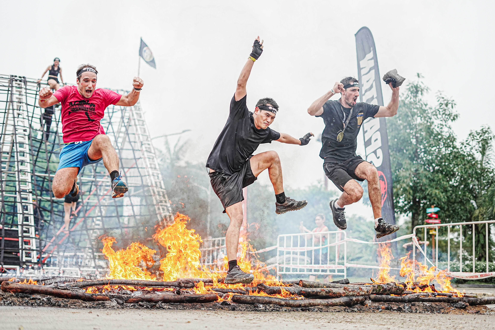
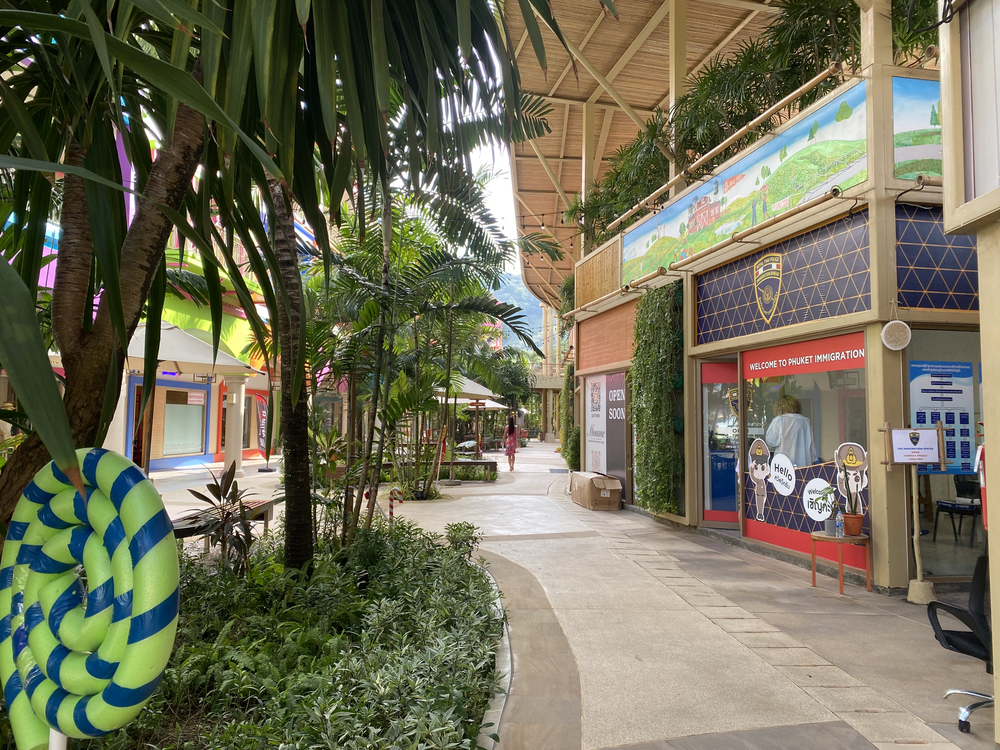

How we're building a life in Phuket as a remote working family
Six months ago we moved to Phuket.
I'm a remote freelancer, and launch random products from time to time.
My spouse works on building her education business.
Our 18 month old goes to a local international kindergarten, and stays with the nanny the other half off the day.
Our second one will be born in a Phuket hospital 3 month from now.
It’s been six months since we moved to Phuket and both started work fully remote.
We're building a life as a fully remote family. One step at a time.
The Good
Sunshine And Beach
A beach is a fantastic playground for a toddler. Our current favorite is Surin as it's close to our home, and easily accessible.
The weather is nice all year round. Between 25 and 35 degrees, with a minimum humidity of 70%.
There are nice houses (but they're difficult to find1)
We rent a house in a gated community for 43,000 thb per month (1,219 usd). Prices seem to be rising due to a high influx of foreigners. The style of the house is nice though maintenance and quality of materials are poor. The gated community offers a relatively safe area for our 18-month old to stroll around, as cars don't drive too fast.
We're surrounded by a mix of western and Thai people, mostly families.
There are multiple Coworkings
Most coworkings are on the south of the island. There's only a small one in the north, and it will be closed soon. Homa, a real estate developer, will open a combined housing and co-working project in January 2024 in the north.
Full-time Nannies are Affordable
Having a nanny a luxury, so much so that I'm anxious to leave Asia before the kids are old enough to be home alone. It was more challenging to find a nanny here compared to Bangkok, where supply outstrips demand, mostly because there are many Burmese nannies. After a couple of Facebook posts we found a good one.
The Air is Clean
This was the main reason to move away from Bangkok. Bangkok and mainland Thailand suffers from burning season roughly between January and April. Phuket gets some of that, but significantly less.
The air here is way cleaner I get sunburned way easily, even in non-burning season.
The Healthcare is Good
Our first baby was born in Bumrungrad Bangkok. Probably the nicest hospital I've ever seen. It could be a 5 star hotel.
Phuket hospitals aren't up to that standard, but Bumrungrad is building a hospital here now as well, but it will take a couple of years as it's just an empty plot of land with a billboard now.
Our second baby will be born in Bangkok Hospital Phuket. The service is great but the hospital itself looks a little worn out (don't let the shiny picture from the Phuket Tourist Association below fool you!).
Phuket is an Outdoor Sports Dream (it's not only resorts and bars!)
Phuket is a sportsman dream environment. The jungle is amazing for (trail) running, the sea for swimming and watersports (kayaking, kitesurfing, ...), the mountain roads are great for cycling. Combine all three and you understand the popularity of the yearly Laguna Phuket Triathlon.
Other popular sports are Muay Thai, Crossfit and Yoga. These people typically show up at the yearly Spartan Run!
The Challenges
Airbnbs are money making vehicles
The first month we stayed in an Airbnb. Sometimes, in some destinations, we run into well thought out AirBnb with extremely friendly hosts. I don't feel Phuket offers this kinds off hosts. It's a feeling obviously, I cannot test them all.
Whenever I find a good landlord, I cherish it. Most landlords won't go the extra mile.
Visas are expensive
Visas are challenging. Thailand raised the prices on the Elite Visas in September 2023, due to high demand. In theory you need to buy one for your children as well, in practice they won't be fined. But they will have a history of overstaying visible in their passports.
Immigration processes can be time-consuming. We recently spent half a day at the immigration office in Blue Tree. A very nice environment at least!
Roads are high speed race tracks
Phuket roads are a lot safer and less busy than Bangkok, but rules are still quasi non-existent, and traffic is busy!
The roads are not accommodating for pedestrians. Once we're out of the safety and comfort of our gated community, it's dangerous to walk with the toddler. This also means that all transport with the toddler happens in the car.
We don't dare transporting her on the motorcycle, like some of the locals do. We didn't try taking her on the bicycle (yet).
Public transport is very limited, probably non-existent. My hypothesis is that the powerful taxi lobby blocks it.
The Future 🚀 🚀 🚀
An ideal scenario would be to remain 3 to 5 years in the same place, then move to a next place.
While having a home base - probably in Europe - for the summer.
The challenges of this lifestyle are financial, but also educational.
I believe a broad range of experiences will help children grow up. At the same time uprooting them every couple of years might have consequences I'm not aware off.
I do believe that a broad range of experiences and adventures will help my children become more adaptable.
I've considered the opposite, tucking the children away in a safe space for the next 18 years. A safe country, like Japan, Scandinavia, the Netherlands or even Switzerland. I think the high standards of living, education and overall development cannot compete with a global, real-world experience.